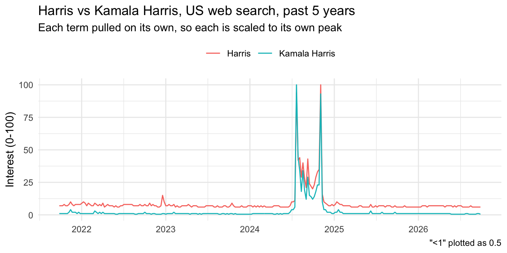
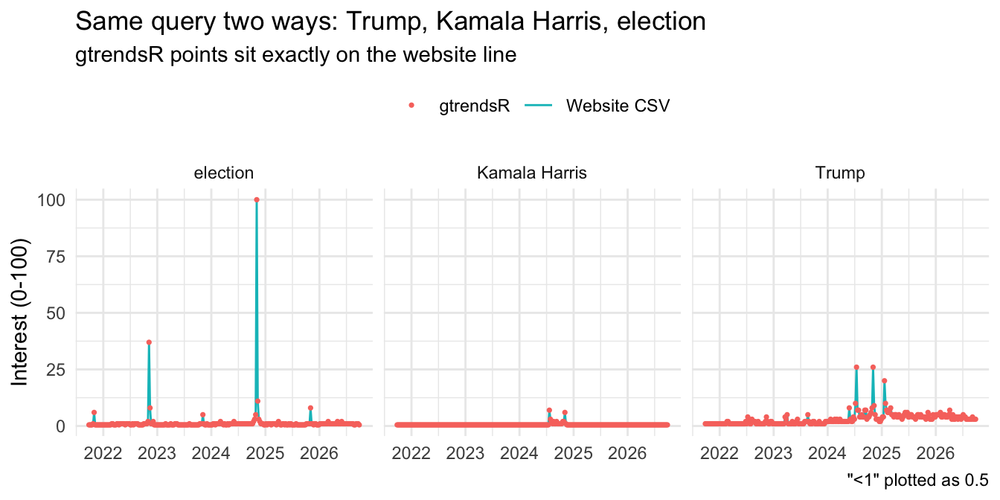

Dates and interval. The five-year file runs weekly from September 26, 2021 to September 27, 2026 (262 weeks). The 90-day file runs daily from June 29, 2026 to September 29, 2026 (93 days), so the interval changes with the window. In both, the last week or day was still in progress when I pulled it.
Units. These are not search counts. Each point is a share of all searches in that place and time, rescaled so the highest point in the query is 100. A 0 means the volume was too low to show, and “<1” means some interest but under 1 (Google).
Removing a term. With Election dropped, the other two terms changed. Trump’s top value went from 26 to 100, and none of its 262 weeks kept the same number. Kamala Harris’s top value went from 7 to 26, and only 228 of 262 weeks stayed the same, mostly the “<1” weeks. Election’s spike had set the 100, so without it everything was rescaled. The numbers only compare within one query.
My own term. “USA Iran war” peaks the week of March 1, 2026. Outside March 2026, its biggest spike is 51 the week of June 22, 2025, around the US strikes on Iranian nuclear sites. It is 0 in 121 of 262 weeks, 102 of them before 2025, and has been above zero every week since January 2026. It only counts searches with all three words, so it misses people who typed “Iran war”.
The R data
I ran the calls until each one succeeded, cached the results, and this page works from the saved files. Every attempt is in r_pull_log.csv, and the full script is pull_gtrends.R. The code below is the assignment’s first call and the rest of gtrendsR01.R, adapted to save each result.
library(gtrendsR)library(readr)TrumpHarrisElection <-gtrends(c("Trump", "Harris", "election"),onlyInterest =TRUE,geo ="US",gprop ="web",time ="today+5-y", # last five yearscategory =0)the_df <- TrumpHarrisElection$interest_over_timeplot(TrumpHarrisElection)# Cache the raw pull - the next call will not return the same numberswrite_csv(the_df, paste0("gtrends_us_5y_", Sys.Date(), ".csv"))# Rest of gtrendsR01.R (adapted)tg <-gtrends("tariff", time ="all")gtrends("tariff", geo ="GB", time ="all")gtrends("tariff", geo =c("US", "GB", "TW"), time ="all")tct <-gtrends(c("tariff", "China military", "Taiwan"), time ="all")names(tct)
Over its full history “tariff” is monthly from 2004 and peaks in April 2025. It peaks in the same month in Great Britain on its own. Pulled for the US, GB and Taiwan together, the US sets the 100, with GB at 58 and Taiwan at 36 at their highest. My copy of the script has no numbered sections, so I took “section 6” as the names(tct) step and “section 7” as running the first call twice.
What the website CSV did not give me.names(tct) lists seven data frames. The timeline CSV I downloaded only had interest over time. It had nothing by country, region, DMA (US media market) or city, and no related topics or queries. The website offers some of these as separate downloads, but one R call returns them all. For this worldwide query the region and related topics frames came back empty, and the other five had data.
ggplot(hk, aes(date, hits, color = keyword)) +geom_line() +labs(title ="Harris vs Kamala Harris, US web search, past 5 years",subtitle ="Each term pulled on its own, so each is scaled to its own peak",caption ="\"<1\" plotted as 0.5",x =NULL, y ="Interest (0-100)", color =NULL) +theme_minimal() +theme(legend.position ="top")

They are not the same. “Harris” peaks the week of November 3, 2024, election week, while “Kamala Harris” peaks the week of July 21, 2024, when Biden dropped out and she became the likely nominee. The two peaks are close in both series, so that order could flip in another sample. Relative to its own peak, “Harris” also stays higher the rest of the time (median 7 vs 1), likely because it also picks up the county, the supermarket and everyone else named Harris. That gap is the difference between a term and a concept. “Harris” measures interest in Kamala Harris plus other things, so the wording decides what I end up measuring.
Comparing the two methods
Show code
web_long <- web1 |>mutate(keyword =recode(keyword, Election ="election")) |>rename(web = hits)r_long <- r_match$interest_over_time |>transmute(date =as.Date(date), keyword, r =as.character(hits))both <-inner_join(web_long, r_long, by =c("date", "keyword"))first_long <- r_first$interest_over_time |>transmute(date =as.Date(date), keyword, r =as.character(hits))script_match <-inner_join(web_long, first_long, by =c("date", "keyword"))t_first <-max(r_log$pulled_utc[r_log$name =="trump_harris_election_us_5y"& r_log$ok])t_repeat <- r_log$pulled_utc[r_log$name =="trump_harris_election_us_5y_repeat2"]gap_min <-round(as.numeric(difftime(t_repeat, t_first, units ="mins")))
Show code
ggplot(both, aes(date)) +geom_line(aes(y =num(web), color ="Website CSV")) +geom_point(aes(y =num(r), color ="gtrendsR"), size =0.6) +facet_wrap(~ keyword, ncol =3) +labs(title ="Same query two ways: Trump, Kamala Harris, election",subtitle ="gtrendsR points sit exactly on the website line",caption ="\"<1\" plotted as 0.5",x =NULL, y ="Interest (0-100)", color =NULL) +theme_minimal() +theme(legend.position ="top")

Are the numbers identical? Yes. I ran the exact website query in R (Kamala Harris, not Harris), and all 786 of 786 values match, with no gap in either direction. The script’s own query with “Harris” also matches the website exactly for Trump (262 of 262) and election (262 of 262), because election’s spike sets the 100 in both. Only the Harris column differs.
Reproducibility. Neither method lets someone else regenerate my file exactly. “Past 5 years” is a moving window, so the same settings cover different weeks tomorrow, and Trends is built from a sample. The R code makes re-running easy, but only my cached files hold these exact numbers.
Provenance. R records the query for me: every row carries the keyword, geography, window, search type and category. It does not record when it ran, and “today+5-y” does not say which five years, so I logged the pull times myself. The website CSV only notes the category and geography, so I had to write down everything else in the datasheet.
Scale. Both allow five terms per query. Fifty terms means at least ten separate searches, each on its own 0-100 scale. In R that is a loop, but the rescaling problem stays, and fifty requests run into rate limits.
Fragility. gtrendsR scrapes a service with no general public API. Of my first nine calls, 3 failed and worked a few minutes later. I knew because R threw an error. If Google quietly changed its scaling, nothing would error. On the website, a wrong setting or a changed page layout only gets caught if every choice was recorded.
Same call twice. Run again 4 minutes later, the first call returned the same numbers, 786 of 786 values, so Google appears to reuse the same sample over a short window. That does not prove the data is stable. Trends is a sample, and my test only covered a few minutes. Every finding from this source needs its exact query and pull time, and should come from a saved file, not a fresh call.